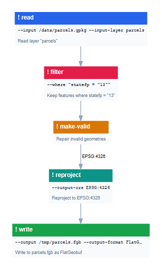
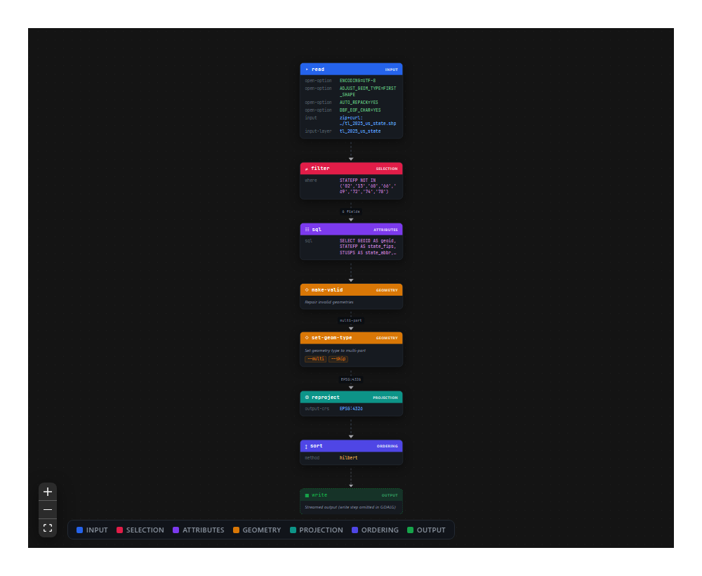

gdalviz parses, validates, and visualizes modern GDAL CLI pipelines (gdal vector pipeline ! ... command lines and GDALG .gdalg.json files), turning them into diagrams that read like what happens to the data rather than shell syntax.
-
Contract-driven - steps and arguments are validated against GDAL’s own
--json-usagemetadata (bundled snapshot, refreshable from your installed GDAL viagdalviz_refresh_contract()), including required arguments, enum choices, and mutually exclusive groups. -
Flexible input - raw pipeline strings,
.gdalg.jsonfiles, and pasted bash / PowerShell scripts (line continuations, heredocs, and\"quoting are normalized automatically). -
Semantic graphs -
pipeline_graph()builds a renderer-agnostic dataflow model: category classification, feature-stream state propagation (CRS, geometry type, field schema), runtime--configgrouping, the GDALG-omitted write step as an explicit streamed sink, and merging of long repeated-step runs (e.g. one-field-at-a-timeset-field-typechains). -
Renderers - interactive React Flow (
render_reactflow(), bundled - no node toolchain needed), static Graphviz (render_diagrammer()), and AntV G6 (render_g6()). -
Round-trip - serialize back to canonical command lines (
render_command_line()), formatted bash / PowerShell scripts (render_script()), or GDALG JSON (as_gdalg()/write_gdalg()).
Installation
# from r-universe (binaries)
install.packages("gdalviz", repos = c("https://jimbrig.r-universe.dev", "https://cloud.r-project.org"))
# or from github
pak::pak("jimbrig/gdalviz")Usage
Parse, lint, and render a pipeline:
library(gdalviz)
cmd <- paste(
"gdal vector pipeline",
"read --input /data/parcels.gpkg --input-layer parcels",
"! filter --where \"statefp = '13'\"",
"! make-valid",
"! reproject --output-crs EPSG:4326",
"! write --output /tmp/parcels.fgb --output-format FlatGeobuf"
)
p <- parse_pipeline(cmd)
lint_pipeline(p) # one row per contract violation (none here)
g <- pipeline_graph(p) # renderer-agnostic dataflow model
render_diagrammer(g) # static graphviz rendering
The interactive React Flow renderer adds pan/zoom, a minimap, and a click-to-open inspector with each step’s arguments, propagated stream state, and GDAL docs link. GDALG files work directly - note the implicit streamed output sink attached where GDALG omits the final write:
system.file("extdata", "pipelines", "tiger_states.gdalg.json", package = "gdalviz") |>
pipeline_graph() |>
render_reactflow(theme = "dark", minimap = FALSE, direction = "TB")
Pasted shell scripts (bash or PowerShell) parse as-is, and everything round-trips back out:
render_command_line(p) # canonical single-line command
cat(render_script(p, shell = "bash")) # formatted multi-line script
write_gdalg(p, "parcels.gdalg.json") # GDALG specificationLearn more
- Getting started vignette - parse, validate, graph, render, round-trip
- Pipeline gallery - live interactive diagrams of real-world pipelines (tee branching, config-heavy runs, merged schema chains)
- Function reference
- Changelog
Development
The interactive widget’s TypeScript/React source lives in srcjs/ (React Flow + dagre, built with Vite/Bun); the compiled bundle is committed to inst/htmlwidgets/ so package users never need a node toolchain. Common tasks are wrapped in the Makefile (make docs, make js, make test, make check, make site), and AGENTS.md documents the architecture and conventions.
Related work
-
GDAL CLI & pipelines - the
gdal vector pipelinealgorithm and GDALG format this package visualizes -
gdalraster - R bindings to the GDAL API, including the
GDALAlgalgorithm interface - dplyneage - React Flow lineage diagrams for dplyr/dbplyr pipelines (kindred spirit for tabular pipelines)